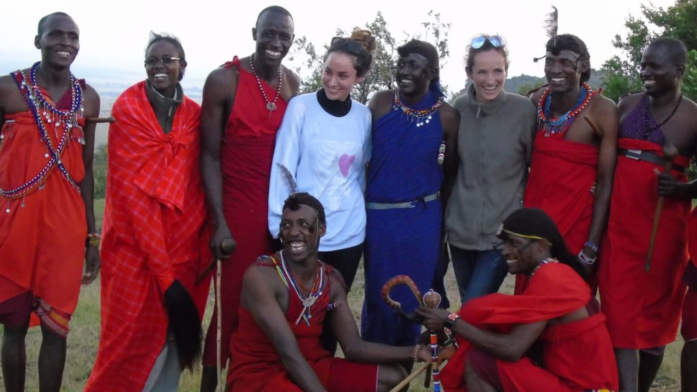

For me personally, travel is a way of life. I was born into a travel-obsessed family and had already lived on three different continents by the time I started school, so wanderlust (and an often ridiculed hybrid accent) was inevitable for me. My sister and I are incredibly fortunate to have parents that insisted that travel was the best classroom and, thankfully, our school holidays were spent exploring fascinating places, both near and far. Upon graduating university (and turning 21), I was given the greatest gift: the gift of travel. Armed with a round-the-world plane ticket and a sense of adventure, I took off on a six-month solo backpacking trip through Europe, Southern Africa and Australia and, without a doubt, it changed the way I saw the world. So, as a self-confessed travel addict, here are the 10 reasons why I love to travel.
Travel exposes us to different cultures and ancient traditions and through these authentic encounters, we learn to embrace and celebrate both our similarities and our differences. Travel teaches us about humanity and gives us an appreciation, understanding and respect for different points of view and ways of life.
|  |